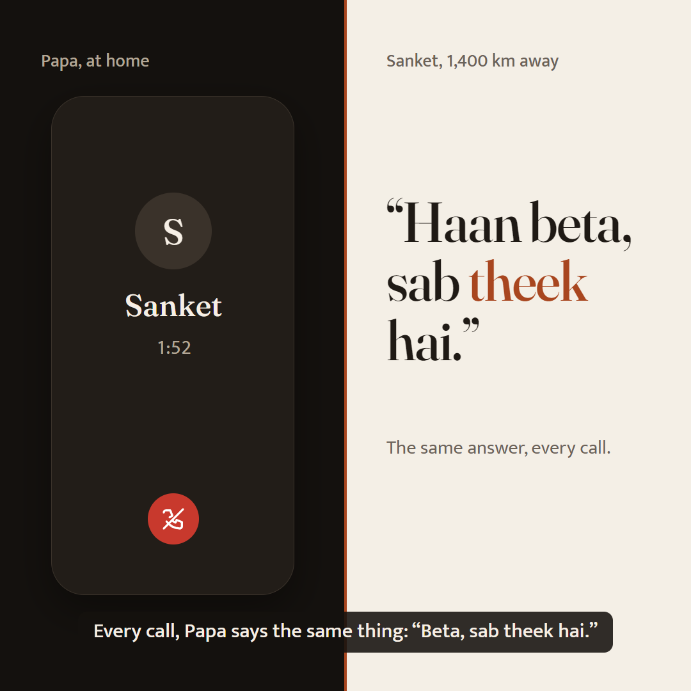
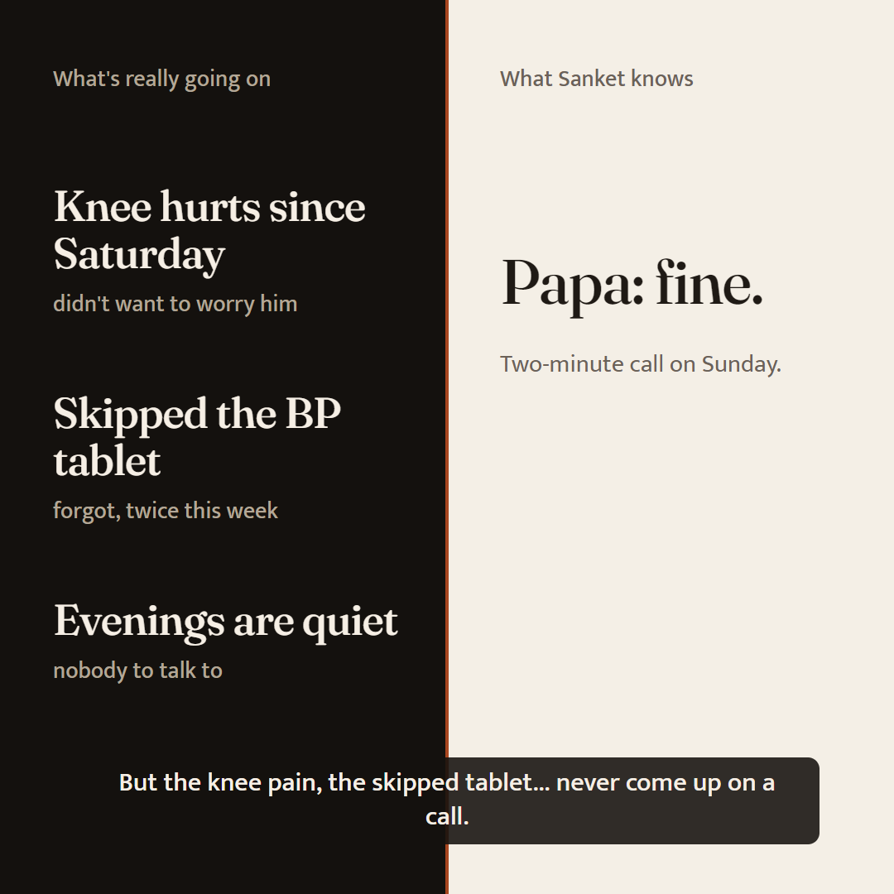
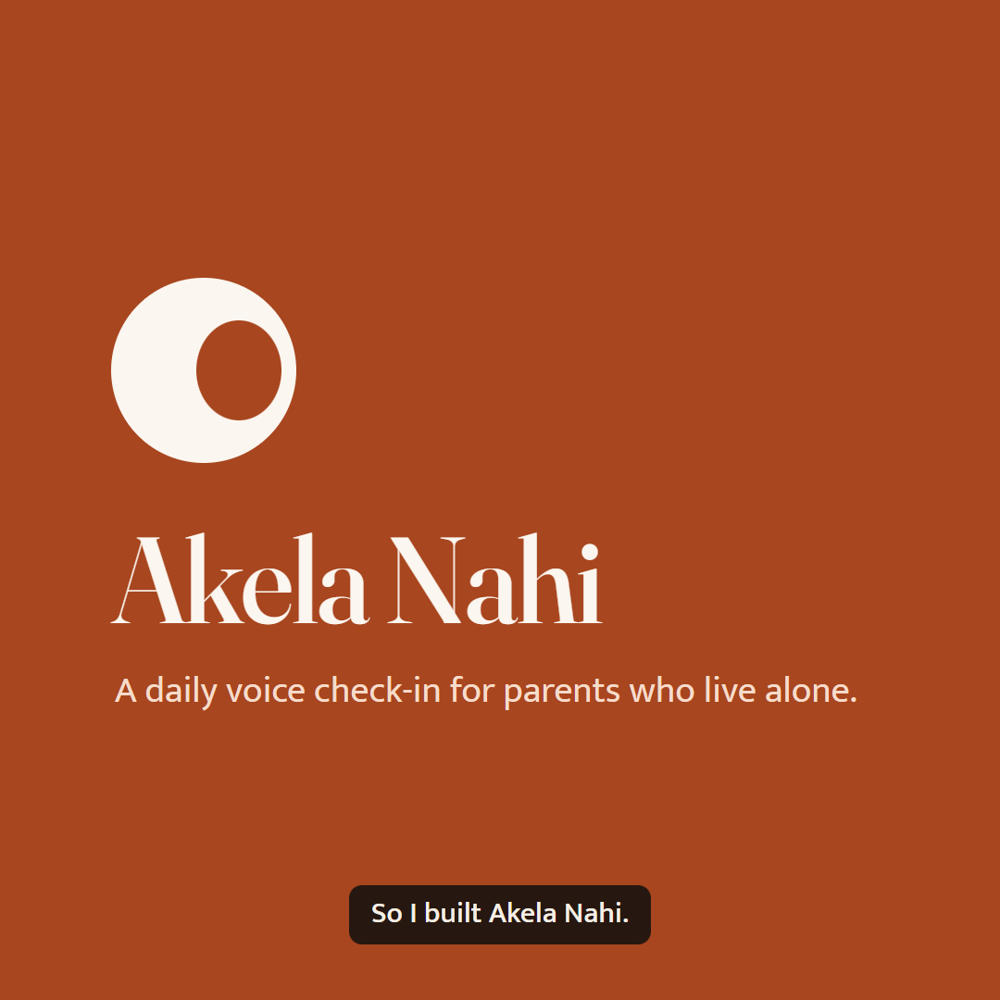
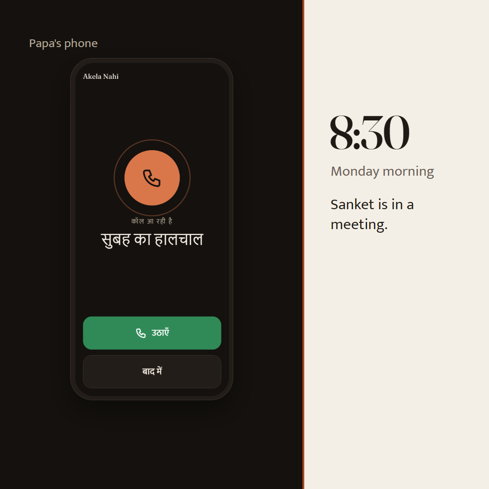
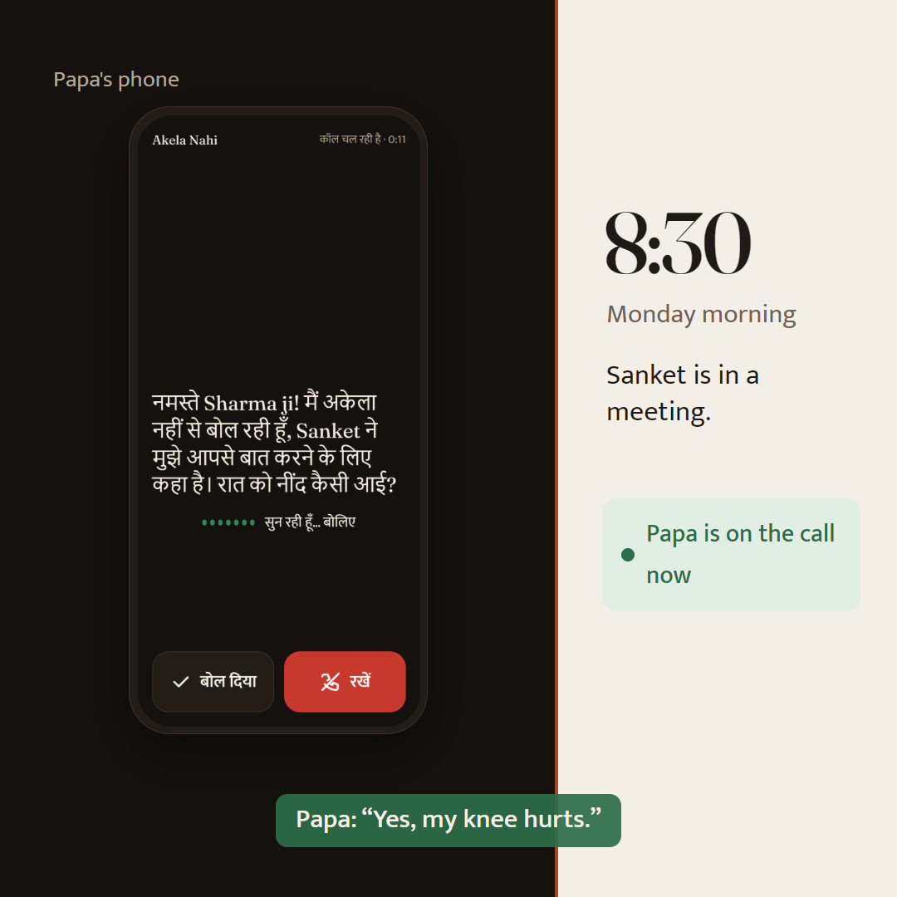
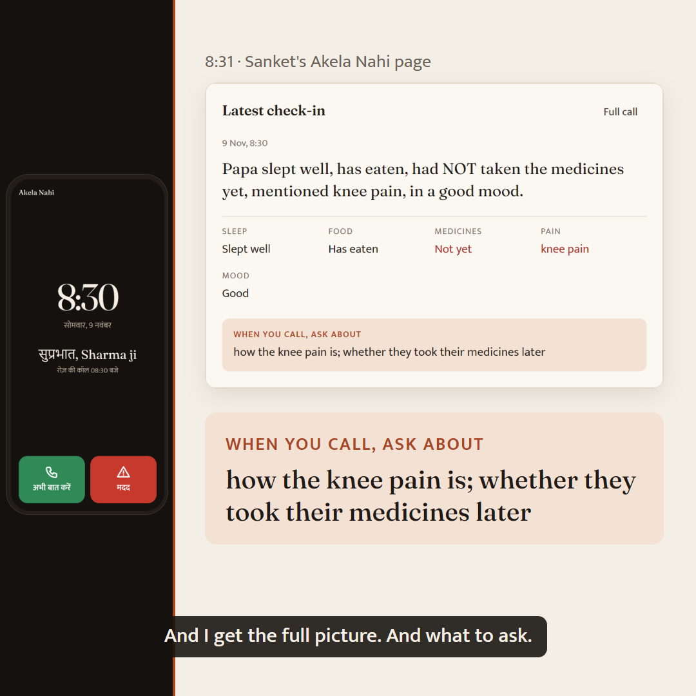
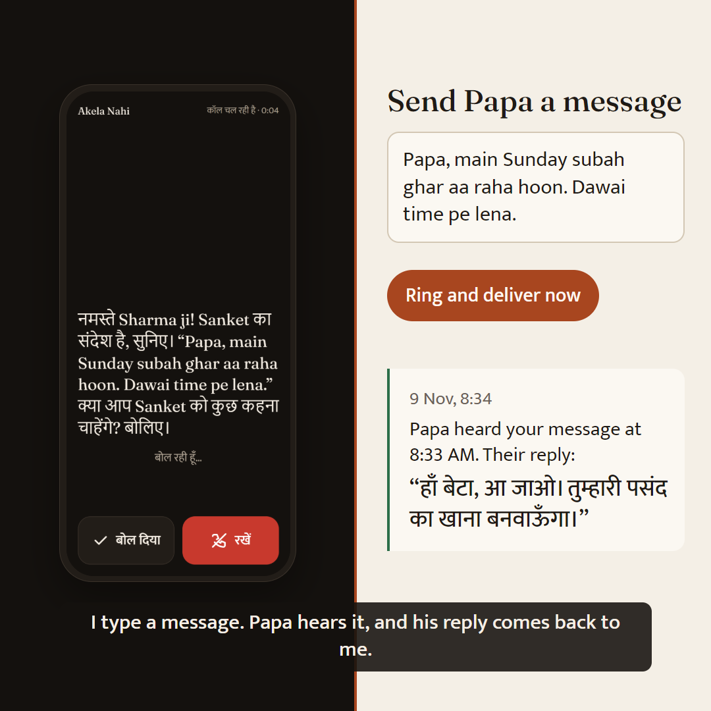
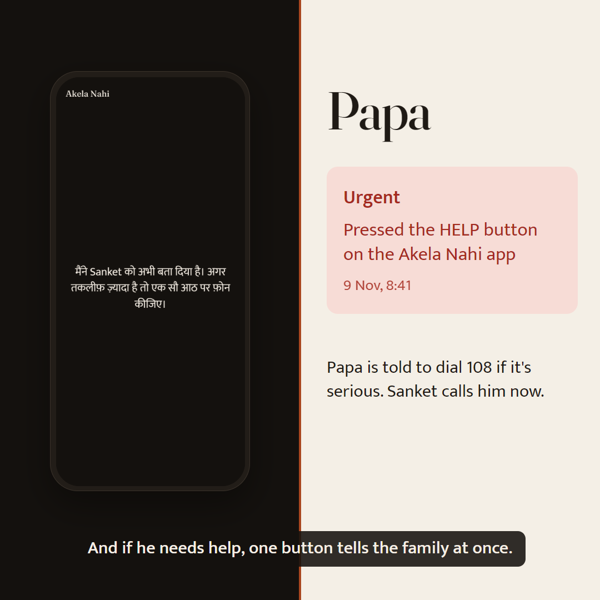
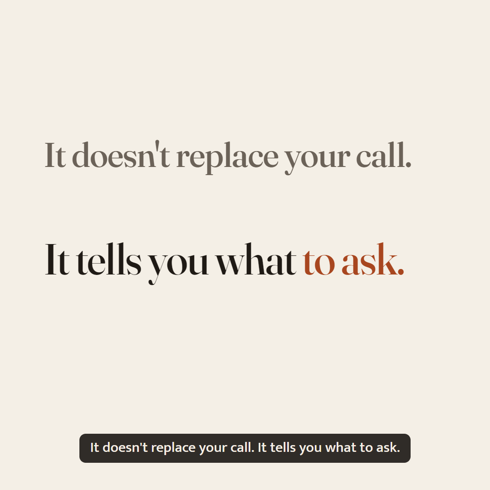
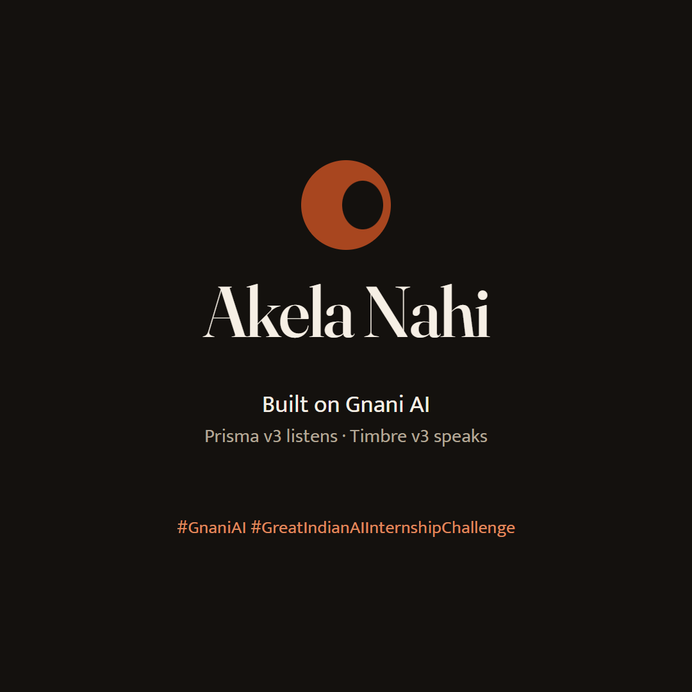

61 s, square 1080×1080, Hindi narration by Gnani Timbre with English captions. Every app screen is a real capture of the app running a real Gnani check-in; the larger cards are the same page pieces rebuilt at 2× with their real text so they read on a phone. These stills are the plan; motion comes after your go.

Split screen: an ordinary call on Papa's side, his usual answer on Sanket's. “theek” in the accent colour.

The three truths appear one by one on Papa's side; Sanket's side just says “Papa: fine.”

The seam opens into the accent colour; the ring mark lands, then the name and one line.

Papa's side widens. Real ringing screen (“सुबह का हालचाल”), ringtone. Sanket is in a meeting.

He answers; the real in-call screen. We hear the app's real question and Papa's real answer: “Yes, my knee hurts.”

The seam slides left. The real “Latest check-in” card, then “When you call, ask about” pulled forward at 2×.

Sanket types and taps “Ring and deliver now”; the message crosses the seam; Papa's real screen reads it out; his Hindi reply comes back.

Papa's real Help screens; the Urgent alert lands on Sanket's page.

The two halves slide together and the seam closes: one frame, one line.

The ring mark draws, the name wipes in, “Built on Gnani AI”, the contest hashtags.